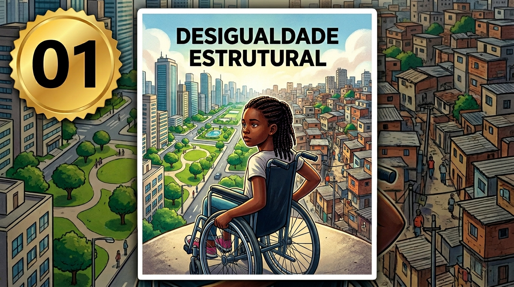
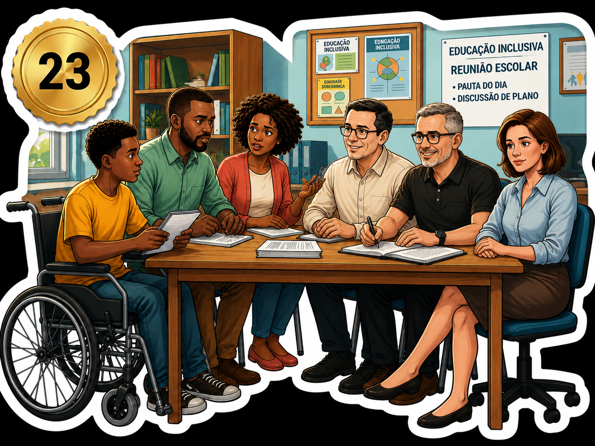
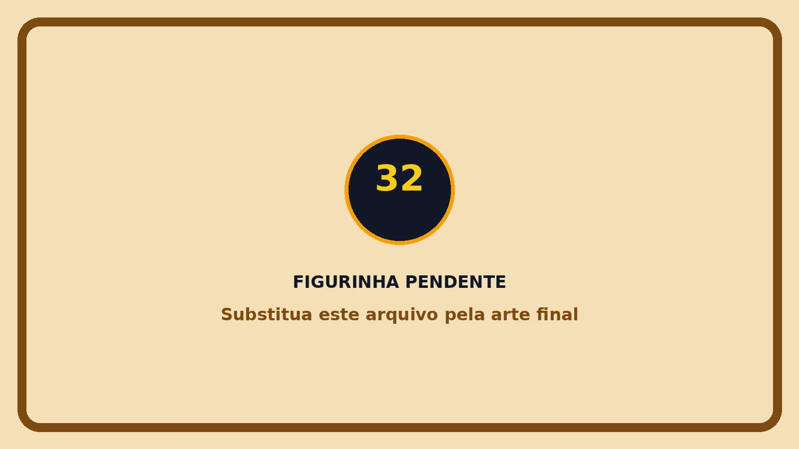
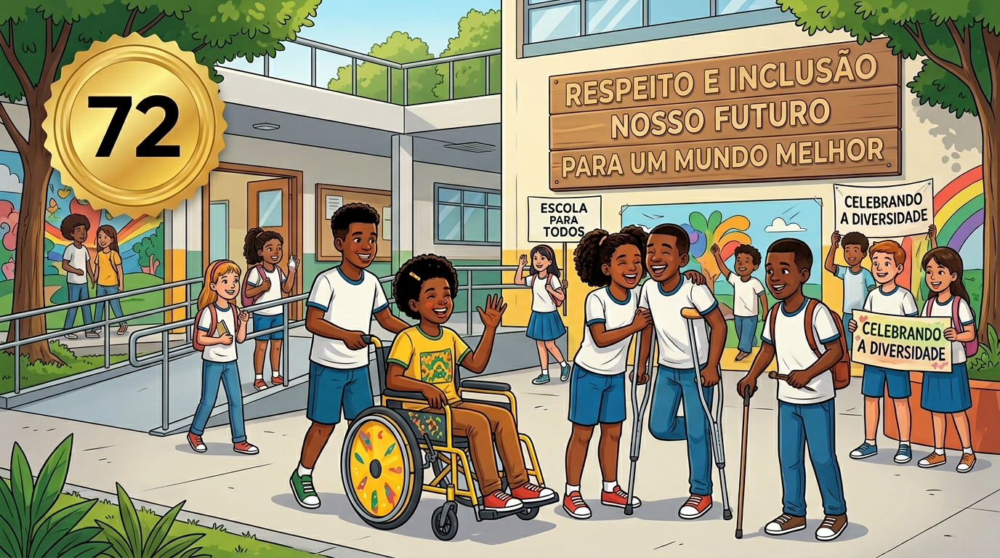

Feira de Ciências • Turma do 8º ano
Dupla Exclusão
Racismo e capacitismo na vida escolar
Apresentação do tema
O tema Dupla Exclusão chama atenção para uma realidade que muitas vezes passa despercebida dentro e fora da escola:
existem estudantes que não enfrentam apenas uma forma de preconceito, mas várias barreiras ao mesmo tempo. Quando um estudante
negro com deficiência sofre racismo e também capacitismo, ele pode ser excluído de maneira dupla: pela cor da pele, pela deficiência,
pela falta de acessibilidade, pela ausência de escuta e pela baixa expectativa que algumas pessoas colocam sobre sua capacidade de aprender.
O racismo aparece quando pessoas negras são tratadas com inferioridade, quando suas histórias são apagadas, quando sua presença é
desvalorizada ou quando são vistas por meio de estereótipos. O capacitismo acontece quando pessoas com deficiência são consideradas
incapazes, dependentes ou impedidas de participar plenamente das atividades escolares e sociais. Quando essas duas formas de discriminação
se encontram, a exclusão se torna ainda mais forte e mais difícil de ser percebida.




Por que falar disso na escola?
A escola é um espaço de aprendizagem, convivência e formação humana. Por isso, ela precisa ser um lugar onde todos os estudantes
se sintam respeitados, representados e pertencentes. Falar sobre dupla exclusão é reconhecer que a inclusão não pode ser apenas uma
palavra bonita em documentos ou discursos. Ela precisa aparecer nas atitudes, nos materiais, nas atividades, na comunicação, na
acessibilidade, nas relações entre colegas e na forma como professores, gestão, família e comunidade acompanham cada estudante.
Quando uma escola discute racismo e capacitismo, ela ajuda os alunos a perceberem que apelidos ofensivos, isolamento, piadas,
falta de adaptação, ausência de Libras, inacessibilidade física, invisibilidade de pessoas negras e baixa expectativa sobre estudantes
com deficiência não são fatos normais. São barreiras que precisam ser combatidas com consciência, respeito e ação coletiva.
Página 1 de 2 — Projeto Álbum Digital Dupla Exclusão
O álbum como ferramenta educativa
Para apresentar esse tema de forma mais atrativa, o projeto utiliza um álbum impresso e um álbum digital interativo.
As figurinhas representam situações, direitos, atitudes e desafios relacionados ao racismo, ao capacitismo, à acessibilidade e à inclusão.
No álbum digital, o visitante acessa pelo QR Code, abre pacotes de figurinhas, cola as imagens no álbum, responde simulados e desbloqueia
explicações sobre cada tema.
Essa proposta transforma o conteúdo em uma experiência prática. O aluno não apenas lê sobre inclusão: ele interage, observa imagens,
responde perguntas, recebe recompensas e reflete sobre situações reais que podem acontecer no ambiente escolar. O objetivo é despertar
consciência, empatia e responsabilidade. Combater a dupla exclusão não é tarefa de uma pessoa só. É compromisso de toda a comunidade escolar.
O que o projeto ensina?
Ensina que a escola inclusiva precisa garantir acessibilidade, respeito, participação, representatividade e pertencimento.
Também mostra que racismo e capacitismo devem ser identificados e enfrentados como problemas sérios de discriminação.
O que o visitante faz?
O visitante conhece o tema, observa as imagens, acessa o álbum pelo celular, participa dos simulados e compreende como pequenas
atitudes podem tornar a escola mais justa, acolhedora e humana.
Alunos apresentadores
A apresentação do trabalho valoriza o protagonismo dos estudantes do 8º ano, que explicam o tema, mostram o álbum impresso,
orientam o acesso ao álbum digital e ajudam os visitantes a compreenderem a importância da inclusão na escola.
Antônio Vitor Anselmo Carvalho
Gabrielly Rodrigues Oliveira
Escola e idealizadores
Realização
Escola Pedro de Queiroz Ferreira
Idealização e coordenação pedagógica
Prof. Cleilson Paiva
Projeto digital e diagramação
Prof. Carlos Tavares
Acesse o álbum digital
Aponte a câmera do celular para o QR Code do álbum e participe da experiência interativa com figurinhas, simulados e fichas explicativas.
Abrir álbum digital

Página 2 de 2 — Projeto apresentado na Feira de Ciências